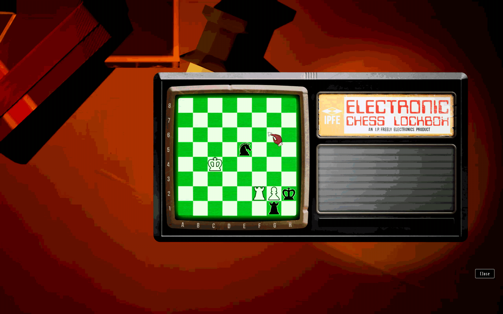
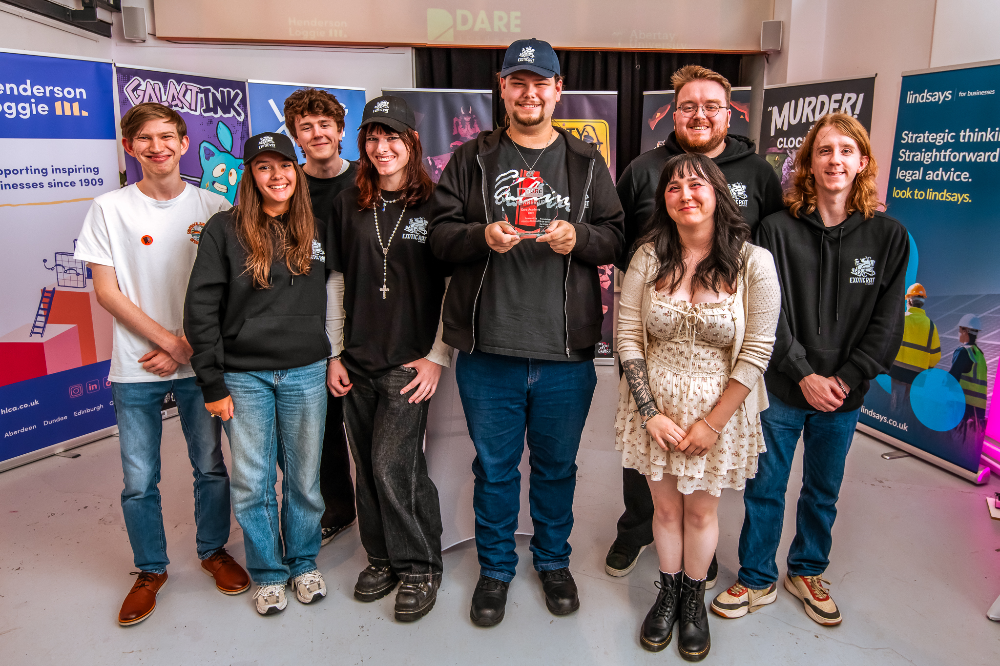
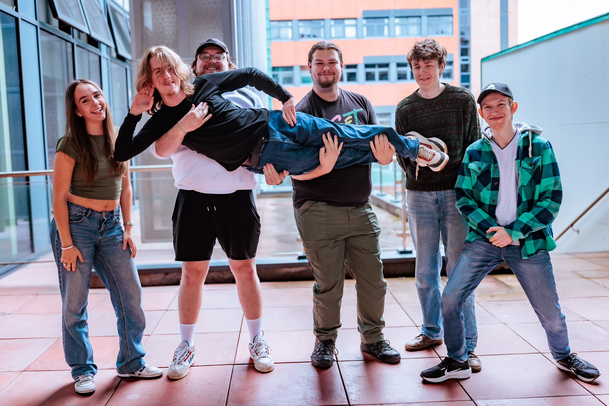

Murder at the Clocktower
DARE Academy 2026 Runner up & finalist
I was one of the programmers part of the student team Exotic Rat Studios, formed during the professional project module in our third year.
Under supervision from industry experts, we created the game over the term, and decided to continue development taking it to DARE Academy 2026, which we went on to not only be accepted as finalists, but win the runner up prize!

|
 |
|---|---|

|

|
Responsibilities
The game was created in Unreal Engine 5, chiefly through C++ wherever possible.
I was responsible for:
- The PDP and "Detective's Corkboard" system (see the above gif)
- The movement and pathfinding of the player character
- The interaction and puzzle systems
- The Chess Puzzle
- Desk "puzzles"
- The elevator
- The letter puzzle in the PDP - Bug fixes and polishes
Project Reflection
DES315
Exotic Rat Studios was formed at the beginning of our professional project module (DES315). Some members of the team knew each other, but it was our first game as a group. Under supervision of industry veterans Storm Cloud Games, we worked on it over the course of the term, and it went about as well as any of us could've hoped for; we all worked and got on excellently with one another, and, while the project took a bit of time to get off the ground, we ended the module on a high, with top marks, and all being keen to continue working on this together.
DARE
A little over a month of incredibly hard work across the team and we took the game from where it was at the end of DES315 to in my opinion a much better place! It feels a great deal more like a detective experience, and a lot more cohesive after all the changes we made to it.
And we won the runners up prize! Wahoo!
Furthermore, I feel that even the systems we did implement could have benefitted greatly from more time to focus on polish, bug fixing and perhaps more elegant soloutions; especially in the final weeks we were very much in a "just make it exist" mindest.
I am still proud of what we have achieved though; I think we definitely greatly improved the game during our time in DARE, and while we any future development plans definitely include some time to refactor parts of our codebase, we have a strong foundation to build off of, and i'm so excited to see what we might get up to next!


|
 |
|---|